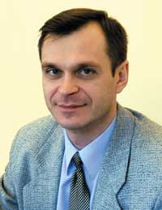

|  |
Сергей ГруздевВ 1985 г. с отличием окончил МЛТИ, факультет электроники и счетно-решающей техники (ФЭСТ), занимающийся подготовкой специалистов для Центра управления полетами. С 1985-го по 1987 г. - аспирант и преподаватель МЛТИ. Имеет более 120 авторских статей. С 1988-го по 1992 г. - директор фирмы Novex, работающей в сфере защиты информации. В 1992 г. возглавил российское отделение компании Eliashim Microcomputers (также занимающейся вопросами защиты информации). С апреля 1995 г. по настоящее время занимает должность генерального директора компании Aladdin Software Security R. D. |
"BYTE/Россия": Компания Aladdin позиционирует себя как эксперта на рынке аутентификации и средств безопасного доступа. Как Вы могли бы охарактеризовать этот сегмент российского рынка? Какова динамика его развития по сравнению с Западом?
С. Г.: Я хотел бы сказать, что мы не просто "позиционируем себя". Стабильный рост компании говорит о том, что мы правильно выбрали стратегию на рынке, иными словами, понимаем его тенденции и потребности.
По итогам 2004 г. аналитики компании Aladdin сделали два важных для нашего рынка вывода. Во-первых, бизнес осознал необходимость управления идентификационными данными и потребность в усиленной аутентификации пользователей. Во-вторых, стали понятны достоинства аппаратных средств аутентификации - они недороги и могут использоваться в разных сетевых средах. Что касается мирового рынка аппаратных средств аутентификации, то он, как и ожидалось, демонстрирует устойчивый рост. Прогнозы авторитетных аналитических компаний - IDC, Gartner Group - позволяют предположить, что если в 2003 г. доход от продаж электронных ключей (токенов) составил 318 млн долл., то к 2008 г. он вырастет до 607 млн долл. Таким образом, средний годовой прирост составит 13,8%. Такие же высокие показатели демонстрирует и сегмент смарт-карт.
В России, в отличие от западных стран, электронным USB-ключам принадлежит подавляющая доля на рынке. Это произошло благодаря агрессивному продвижению именно USB-ключей на формирующийся отечественный рынок. При этом заметно доминируют токены западного производства - их доля составляет около 90%. В целом доля электронных ключей по-прежнему остается превалирующей, однако на 2005 г. мы прогнозируем изменение соотношения USB-ключей и смарт-карт до 70:30.
Тройка основных игроков этого рынка остается прежней*. Доли других компаний (как правило, дилеров западных компаний-производителей) на сегодняшний день ничтожно малы.
* Согласно экспертным оценкам, это компании Aladdin, Rainbow Technologies и "Актив" (перечислены в алфавитном порядке). - Прим. ред.
В целом я бы выделил на отечественном рынке следующие основные тенденции. Интерес к проблеме аутентификации в России подогревается "взрослением" российской законодательной базы и принятием законов "Об электронной цифровой подписи", "О защите авторских прав" и закона "О коммерческой тайне". Заметное оживление на российском рынке электронных ключей произошло летом 2004 г. - рынок созрел и окончательно "проснулся". Многие проекты, начатые как пилотные год-два назад, перешли в фазу промышленного внедрения и принесли значительные дивиденды разработчикам и дистрибьюторам.
Сейчас наблюдается заметный интерес к USB-токенам со стороны государственных учреждений. Замечу, что поставляемые в госсектор токены обязаны иметь соответствующий сертификат, и eToken PRO компании Aladdin пока остается единственным сертифицированным программно-аппаратным устройством аутентификации, которое можно использовать при работе с конфиденциальными данными.
Что касается пользовательских предпочтений, они отданы западным средствам как более надежным, совместимым и технологически совершенным. К сожалению, отечественная продукция пока отстает и в технологическом, и в техническом плане. Она еще недостаточно зрелая для выхода на массовый рынок, поэтому на данный момент ниша российских разработок - рынок спецприложений.
Поскольку в 2004 г. был принят новый Таможенный кодекс РФ, полагаю, в ближайшем будущем стоит ожидать усиления контроля импортно-экспортных операций со стороны регулирующих органов. Как известно, электронные USB-ключи для усиленной аутентификации относятся к шифросредствам, следовательно, производители и поставщики обязаны иметь соответствующие лицензии ФСБ и Минэкономразвития на их ввоз и распространение. В связи с этим доля "серого" и "черного" импорта в Россию сократится, и это скажется на деятельности компаний, которые занимаются нелегальным ввозом токенов.
"BYTE/Россия": Каковы же в этом свете планы на ближайшую перспективу - год-полтора? Что повлияет на развитие мирового и российского рынков?
С. Г.: Аналитики уверены, что темпы внедрения систем многофакторной аутентификации со временем будут только возрастать. Анализируя вероятные стратегии потребителей и динамику сегментов рынка аппаратных средств аутентификации, можно утверждать, что мировой рынок будет формироваться под влиянием следующих факторов. Прежде всего компании заинтересованы в упрощении процедур аутентификации при доступе к ресурсам и сокращении количества пользовательских паролей. Все больше организаций открывает доступ к своим сетям удаленным пользователям - собственным сотрудникам, партнерам, клиентам. Как правило, для защиты при подобном доступе используется технология VPN, основанная на протоколах IPSec или SSL/TLS. VPN обеспечивает надежное шифрование передаваемых данных и аутентификацию сторон информационного обмена. Однако в рамках процедуры аутентификации нередко используются обычные пароли, не обеспечивающие должного уровня доверия. Учитывая это, компании все чаще прибегают к аппаратным средствам аутентификации, среди которых наиболее популярны электронные USB-ключи.
Росту рынка аутентификации способствует и то, что восстановление утерянного пароля вовсе не бесплатно, при том что пароли часто забывают. Исследования Gartner показывают, что от 10 до 30% звонков в службу технической поддержки компании - это просьбы сотрудников восстановить забытые ими пароли. По данным IDC, каждый забытый пароль обходится организации в 10-25 долл. Токены снимают эту проблему, не требуя от пользователей запоминать многочисленные пароли.
Большой плюс для рынка - актуальная тенденция встраивания поддержки средств аутентификации в состав решений вендоров, таких, как Microsoft, Cisco Systems, Novell, Oracle и т. д. В рамках корпоративных приложений токены могут использоваться для аутентификации пользователей, хранения криптографических ключей, формирования электронной цифровой подписи и т. п.
Изменений в стане основных игроков западного рынка токенов пока не предвидится. Скорее всего, новые соперники в России и мире не появятся, а возможность консолидации компаний маловероятна.
Аналитики многих исследовательских компаний, в том числе IDC и Gartner Group, считают, что к 2008 г. применение электронных USB-ключей для аутентификации вырастет до того уровня, которого достигло использование ОТР-токенов (One Time Password - электронные ключи с системой генерации одноразовых паролей). Gartner Group называет USB-токены и смарт-карты лучшим инвестиционным вложением в обеспечение безопасного доступа к данным в 2005 г.
По нашим прогнозам, в России с 2005 г. начнется упорядочение рынка средств аутентификации. Это связано в первую очередь с осознанием ценности корпоративной информации, с повышением интереса госструктур к средствам, обеспечивающим строгую аутентификацию пользователей, с возможностью применения ЭЦП и управления доступом. Компании, которые предлагают нелицензированные или несертифицированные средства безопасного доступа, "серые" поставщики и т. п., скорее всего, будут вытесняться с рынка. Это связано с упорядочением работы таможенных служб и принятием ряда новых законов.
В фокусе потребительских предпочтений будут те российские поставщики, которые имеют наиболее четкую политику, продуманную линейку продуктов и систему управления всеми средствами аутентификации (смарт-карты, токены, электронные ключи с системой OTP). И в этом смысле мы считаем, что Aladdin имеет самые широкие перспективы, особенно с учетом недавно анонсированной нами комплексной системы eToken TMS (Token Management System) для управления жизненным циклом средств аутентификации.
"BYTE/Россия": Расскажите подробнее об этой системе и в целом об инновационных технологиях, предлагаемых компанией на рынке защиты информации, - в чем особенность ваших последних разработок?
С. Г.: eToken TMS - система, предназначенная для внедрения, управления, использования и учета средств аутентификации пользователей в масштабах организации. eToken TMS сокращает расходы на техническую поддержку и сопровождение ИТ-инфраструктуры предприятия, позволяя снизить совокупную стоимость владения информационной системой и увеличить возврат на инвестиции. Простое и удобное управление всеми средствами аутентификации, прозрачность ИТ-инфраструктуры и высокий уровень безопасности - вот основные преимущества eToken TMS, принципиально нового продукта на российском рынке. Востребованность подобных систем мы смогли оценить по результатам семинара-презентации, прошедшего в начале апреля. Семинар посетили как реальные, так и потенциальные клиенты Aladdin, а также ряд партнеров компании, которые проявили заметный интерес к новой технологической разработке.
Востребованность наших решений и продуктов напрямую зависит от степени зрелости бизнеса и законодательства в России. Рынок - среда деликатная, его надо воспитывать, формируя спрос. Показательно в этом смысле, как формировался спрос на сам eToken. Поначалу он воспринимался как некоторая экзотика, целесообразность применения которой в ИТ-среде тогда была неочевидна. Но время все расставило по местам.
Если говорить об уникальности, то Aladdin Knowledge Systems, дистрибьютором которой мы являемся, была первой компанией, выпустившей USB-токен. Суть электронного USB-ключа - в интеграции микросхемы смарт-карты и USB-контроллера, обеспечивающего коммуникацию с компьютером и выполняющего функцию карт-ридера. Криптография реализована в микросхеме смарт-карты, закрытые ключи ее никогда не покидают, что обеспечивает надежную защищенность таких устройств. Этот тип токенов наиболее востребован на рынке и наилучшим образом совместим с большинством современных приложений. Другая разновидность USB-ключей построена на базе серийного микроконтроллера, программно эмулирующего функциональность смарт-карты. Такие ключи дешевле, но хуже защищены. Обе технологии в свое время были запатентованы компанией Aladdin Knowledge Systems.
Что касается другого направления бизнеса Aladdin - защиты ПО, то в конце 2004 г. мы провели презентацию нового электронного ключа HASP HL, представителя пятого поколения электронных ключей для защиты ПО, пришедшего на смену ключам HASP 4. Концептуальное отличие новых ключей состоит в том, что в HASP HL аппаратно реализован публичный алгоритм шифрования AES с длиной ключа 128 бит - американский стандарт криптографии с 2000 г. Это надежная защита, которую до сих пор никто еще (по крайней мере, по подтвержденным данным) не преодолел.
В ключах нового поколения разделены системы защиты и система управления лицензиями. Благодаря этому пользователи HASP HL получают возможность автоматического лицензирования защищенного ПО по числу запусков, времени использования и т. п. По сравнению с HASP 4 в новых ключах до 4 Кбайт увеличен размер защищенной памяти. И плюс ко всему на сегодняшний день HASP HL - самый компактный USB-ключ на рынке, его размеры по сравнению с предшественником уменьшены в полтора раза.
"BYTE/Россия": Какой процент ПО, представляемого на российском рынке, защищен с помощью электронных ключей HASP?
С. Г.: Согласно отчету IDC, компания Aladdin Knowledge Systems - мировой лидер среди производителей средств защиты ПО. Дать точную количественную оценку для российского ПО, защищенного ключами HASP, могут, наверное, только независимые эксперты. В 2002-2003 гг. мы оценивали свою долю на рынке аппаратных средств защиты ПО в 70%. Темпы роста направления защиты ПО в те годы были достаточно высокими и стабильными. Прошедший год также принес успех не только направлению eToken, но и направлению HASP. Конечно, рост был не таким бурным, как у eToken, но увеличение в два раза (до 48%) темпов роста такого стабильного и устоявшегося направления, как защита ПО, можно назвать большим достижением.
Исходя из цифр общего прироста рынка ПО в 2004 г. - на 25%, можно предположить, что доля компании Aladdin на российском рынке защиты ПО увеличилась в 2004 г. до 75%.
Изменение темпов роста нашего направления защиты ПО было вызвано в первую очередь тем, что мы начали уделять больше внимания вертикальным сегментам рынка. Компания Aladdin первой показала, сколь широким может быть спектр решаемых с помощью HASP задач. Помимо традиционной защиты от нелегального использования ПО, мы предложили использовать HASP для построения различных схем дистрибуции защищенных приложений, лизинга, аренды, продаж и т. п. Таким образом, компания Aladdin ушла от традиционно технической подачи ключей защиты ПО как средства для решения одной задачи. Мы показали разработчикам, как с помощью ключей HASP продавать свое ПО удобнее, быстрее, а главное - зарабатывая при этом намного больше.
"BYTE/Россия": Инновационные технические и технологические решения в области систем информационной безопасности - это, несомненно, наиболее ценный капитал Aladdin, и они, в свою очередь, подлежат всесторонней защите от недобросовестного посягательства. Как на данный момент обстоят дела с патентованием инноваций и их дальнейшим лицензированием сторонним компаниям?
С. Г.: Российский ИТ-рынок стремительно развивается, следовательно, вопрос патентования становится все более актуальным. Понятно, что наличие патентов и бизнес на продаже лицензий имеет смысл в обществе, где соблюдаются законы. В России все не так просто. Однако я не думаю, что не имеет смысла говорить "спасибо" невоспитанным людям.
В конце января 2005 г. первую лицензию Aladdin Knowledge Systems на использование технологий смарт-карт в USB-ключах приобрела компания RSA Security, а это крупнейший игрок на мировом рынке информационной безопасности. Думаю, это знаковое событие. Технологии Aladdin иногда опережают рыночный спрос, но если крупнейший вендор уже осознал необходимость легального использования этих разработок, то лицензирование их другими компаниями рынка - просто вопрос времени.
"BYTE/Россия": В конце 2004 г. компания представила Secret Disk Server NG, который позволяет не только шифровать данные, но и скрывать их наличие. Расскажите, пожалуйста, об этом продукте подробнее.
С. Г.: Семейство продуктов Secret Disk NG - это новое поколение средств защиты серверов и корпоративной информации (баз данных, файловых архивов, бизнес-приложений и их данных), хранящейся на серверах и ПК под управлением ОС Microsoft Windows, от несанкционированного доступа и копирования их как посторонними лицами, так и сотрудниками компании.
Защита информации в этих продуктах обеспечивается путем "прозрачного" шифрования содержимого разделов жестких дисков на сервере с использованием быстрых и стойких криптографических алгоритмов, включая сертифицированные отечественные ("КриптоПро CSP 2.0" и Signal-COM CSP), что немаловажно. При получении сервером сигнала "тревога" доступ к информации мгновенно блокируется, а сама информация становится невидимой. Сигнал "тревога" подается путем нажатия "красной" кнопки, при помощи радиобрелока или, например, при срабатывании датчиков охранной сигнализации в случае несанкционированного проникновения посторонних в серверную комнату.
Главным отличием новой версии продукта для защиты серверов - Secret Disk Server NG стала возможность блокирования прямого доступа для сотрудников компании к корпоративным базам данных или их разделам, что исключает копирование и кражи конфиденциальной информации. Важнейший компонент SDS NG - аппаратно-программное средство аутентификации пользователей eToken PRO, сертифицированное Гостехкомиссией.
"BYTE/Россия": Известно, что Aladdin обладает достаточно развитой партнерско-дилерской сетью практически во всех регионах страны. Какова политика компании в отношении сертификации партнеров и дилеров? Вы взимаете за это какую-либо плату? Охотно ли партнеры Aladdin сертифицируют своих специалистов?
С. Г.: Сертификацию мы рассматриваем как обязательное условие при получении партнерского статуса любой компанией. Схема очень проста: чем больше у компании сертифицированных партнеров, тем выше качество предоставляемых услуг, тем больше конкурентных преимуществ, а следовательно, выше потребительская активность и в конечном счете - доход.
Наличие сертифицированных специалистов у партнера - очень важный момент для успешных продаж. Специалисты компаний-партнеров должны регулярно проходить сертификацию у вендора.
Хотел бы подчеркнуть один важный аспект: сертификация для компании Aladdin - не способ заработать на партнерах. Это наша официальная позиция. На текущий момент курсы по обучению мы проводим бесплатно, что, на наш взгляд, само по себе является стимулом.
С 1 сентября 2005 г. при продлении партнерских договоров особое внимание будет уделяться факту наличия сертификата о пройденном обучении как минимум у двух специалистов компании-партнера: технического и менеджера по продажам.
На сегодняшний день в Aladdin существует ряд учебных курсов, которые специалисты компании регулярно читают по всем продуктовым линейкам. Прежде всего это курсы "Архитектура eToken" и "Развертывание инфраструктуры открытых ключей на платформе Windows Server 2003. Использование смарт-карт и ключей eToken". Мы также периодически проводим мастер-классы по темам "Администрирование комплекса усиления функций безопасности ОС Microsoft Windows XP Professional", "Аутентификация с использованием одноразовых паролей (OTP)", "Защита персональных и корпоративных данных от несанкционированного доступа, изъятия и кражи (на базе продуктов "прозрачного" шифрования дисков - Secret Disk NG и Secret Disk Server NG)" и некоторым другим. Для повышения эффективности обучения компания Aladdin считает обязательным наличие практической составляющей в каждом из проводимых курсов.
Все эти курсы предназначены для партнеров компании Aladdin, пользователей продукта, сотрудников ИТ-отделов и отделов информационной безопасности, консультантов по информационной безопасности. Мы рекомендуем их организациям, занимающимся распространением и внедрением технологий eToken, а также организациям, использующим или планирующим использовать eToken.
"BYTE/Россия": Расскажите в двух словах о ближайших планах компании в отношении собственных продуктовых линеек. Какие новинки ожидают потребителей решений Aladdin в 2005 г.?
С. Г.: Что касается ближайших перспектив, в мае мы выводим на российский рынок новое универсальное средство аутентификации с системой генерации одноразовых паролей eToken New Generation OTP (One-Time Password). Это новое слово в предоставлении мобильного и безопасного доступа к данным. eToken NG-OTP представляет собой комбинированное USB-устройство, в котором реализована функциональность eToken PRO, с добавлением дисплея и кнопки для генерации одноразовых паролей. По своим возможностям USB-ключ eToken NG-OTP - это аналог смарт-карты, совмещенной со считывателем, который может работать с широким спектром приложений, совместимых со смарт-картами.
Работа с eToken NG-OTP не требует установки дополнительного драйвера, что позволяет применять ключ на "чужом" компьютере, вне офиса. Он решает проблему защищенного доступа с использованием КПК, мобильных телефонов и других устройств, в которых не предусмотрен USB-разъем.
Значительное внимание в текущем году мы будем уделять направлению смарт-карт, а точнее, идее так называемой единой корпоративной карты, на которую нанесены идентификационные данные (фото, имя), имплантирована радиометка (RFID-чип) для управления доступом в помещения. Кроме того, на карте может находиться привычная магнитная полоса для осуществления платежей. При этом огромное значение имеет наличие автоматизированной системы управления жизненным циклом таких карт, обеспечивающей их издание, печать на них идентификационных данных, управление профилями пользователей, дистанционное разблокирование карт и т. п. В 2005 г. мы выводим на рынок сразу две такие системы: TMS (eToken Management System) - для компаний, использующих eToken, и Athena CMS (Card Management System), построенную на лучшей сегодня системе управления базами данных MyID компании Intercede, - для компаний, отдавших предпочтение смарт-картам Athena (Япония).
В целом на 2005 г. мы запланировали интенсивный рост бизнеса и увеличение доли присутствия Aladdin на рынке. Но нашей основной целью по-прежнему остается безопасность бизнеса как такового и, как следствие, формирование безопасного информационного пространства в нашей стране.
Другие статьи из раздела |
 |  | Комментарии к статье |  | |
| Рекламные ссылки |
 Chloride ChlorideДемонстрация Chloride Trinergy Впервые в России компания Chloride Rus провела демонстрацию системы бесперебойного электропитания Chloride Trinergy®, а также ИБП Chloride 80-NET™, NXC и NX для своих партнеров и заказчиков.  NEC Нева Коммуникационные Системы NEC Нева Коммуникационные СистемыЗавершена реорганизация двух дочерних предприятий NEC Corporation в России С 1 декабря 2010 года Генеральным директором ЗАО «NEC Нева Коммуникационные Системы» назначен Раймонд Армес, занимавший ранее пост Президента Shyam …  компания «Гротек» компания «Гротек»С 17 по 19 ноября 2010 в Москве, в КВЦ «Сокольники», состоялась VII Международная выставка InfoSecurity Russia. StorageExpo. Documation’2010. Новейшие решения защиты информации, хранения данных и документооборота и защиты персональных данных представили 104 организации. 4 019 руководителей … Другие фоторепортажи |
 Adaptec by PMC Adaptec by PMCRAID-контроллеры Adaptec Series 5Z с безбатарейной защитой кэша Опытные сетевые администраторы знают, что задействование в работе кэш-памяти RAID-контроллера дает серьезные преимущества в производительности …  Chloride ChlorideТрехфазный ИБП Chloride от 200 до 1200 кВт: Trinergy Trinergy — новое решение на рынке ИБП, впервые с динамическим режимом работы, масштабируемостью до 9.6 МВт и КПД до 99%. Уникальное сочетание …  Embarcadero EmbarcaderoВозможности Delphi 2010 Посмотрите обзор среды разработки Delphi и оцените, как можно использовать данную технологию для быстрой разработки Windows-приложений. В это обзоре … Другие видеоролики |
| Темы |
- Перспективные технологии
- Информационная безопасность
- Серверы
- HPC (High Performance Computing)
- Центры обработки данных
- Технологии хранения данных
- Инфраструктурные технологии
- Периферийное оборудование
- Телеком-решения
- Мобильные решения
- ERP
- Документооборот
- Управление бизнес-процессами
- Бизнес-аналитика
- Интеграционные технологии
- Разработка приложений
- Интеграция данных и приложений
- Управление ИТ-инфраструктурой
- Технологии виртуализации
| Мероприятия |
Dell Desktop Virtualization Forum 2014
20 — 22 мая 2014 г. | Новосибирск
Межрегиональный форум «Инфосибирь»
20 мая 2014 г. | Москва
Docflow 2014
Другие мероприятия
| Форумы |
Федор Буцко, 07.04.2014 20:24:47
Как построить собственный ЦОД
Александр, 01.04.2014 19:08:52
Блейд-серверы HP в эволюции ИТ-инфраструктуры
Жания, 28.03.2014 12:12:38
StarWind Native SAN для Hyper-V: история успеха
satosan, 24.03.2014 12:54:37
Новые технологии в Security operation center
Иван, 20.03.2014 09:53:28
| Пресс-релизы |

109147 г. Москва, ул. Марксистская, 34, строение 10. Телефон: (495) 974–2260. Факс: (495) 974-2263. E-mail: byte@bytemag.ru.